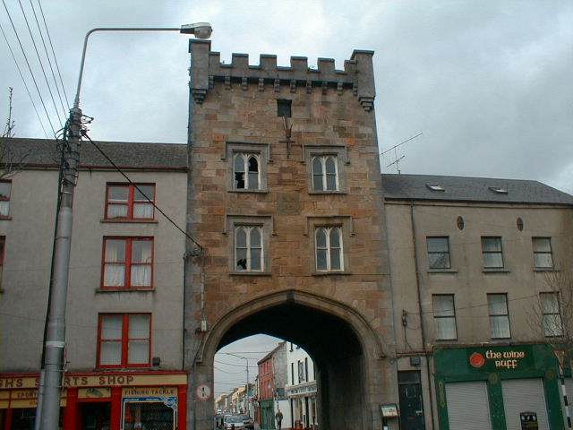

West Gate
The West Gate was built in 1831 by a merchant called joyce. It was part of thedefences in the medieval town.
The Irish who lived outside the town were allowed to work and trade inside the gates but had to leave in the evening time.
In 1978 the westgate was bought by a gruop of local buisness.

In 1979 a local pirate radio station was set up broadcasting from
the West Gate. This closed down in 1986 under the new radio and broadcasting laws. Since then the West Gate has remained unoccupied.
The West Gate at the moment is unsafe and unfit to be used. acces to the West Gate is prohibited.
© 2004 history Of Clonmel